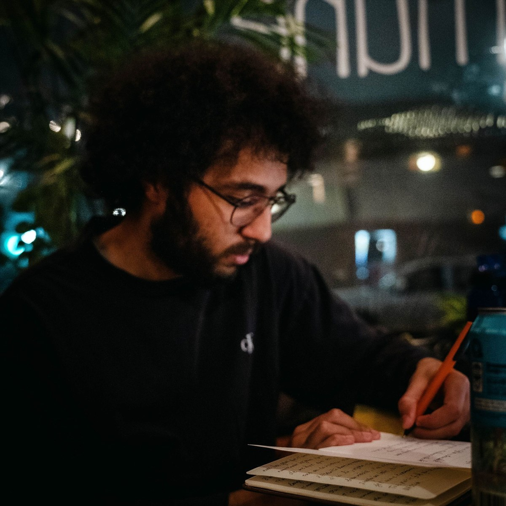

Médias sociaux
Retrouver Shamy partout où ça bouge.
Extraits de stand-up, musique, vidéos, lives et projets en cours. Le meilleur point de départ reste Instagram, mais tout est rassemblé ici.

Liens directs
Médias sociaux
Extraits de stand-up, musique, vidéos, lives et projets en cours. Le meilleur point de départ reste Instagram, mais tout est rassemblé ici.

Liens directs